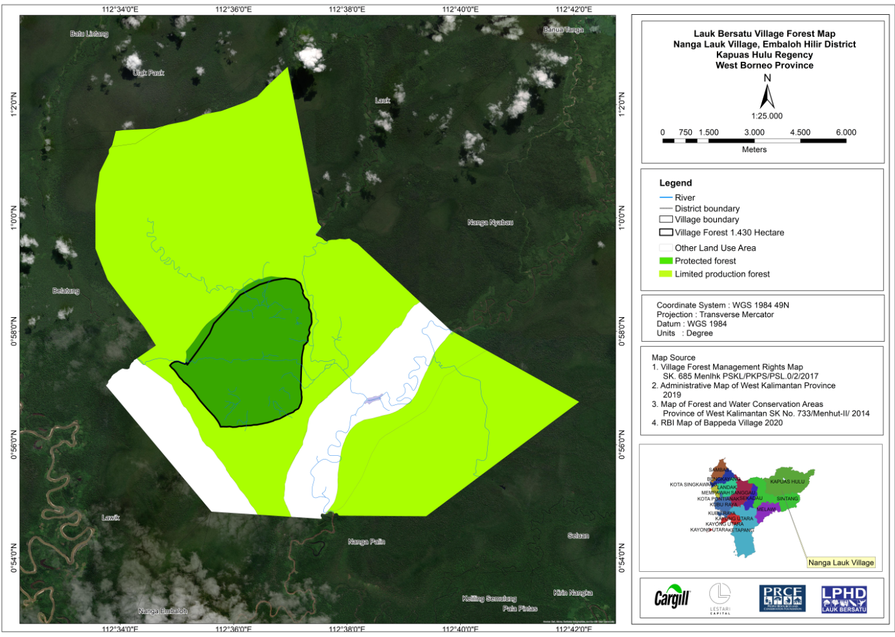

Tentang Hutan Desa Nanga Lauk
Hutan Desa di Desa Nanga Lauk dikelola langsung oleh masyarakat setempat berdasarkan hak kelola selama 35 tahun atas wilayah seluas 1.430 hektar, sebagaimana ditetapkan dalam Keputusan Menteri Lingkungan Hidup dan Kehutanan Nomor SK.685/Menlhk-PSKL/PKPS/PSL.0/2/2017. Keputusan ini membuka peluang bagi warga untuk mengelola dan memanfaatkan potensi sumber daya hutan secara berkelanjutan — kawasan yang sebelumnya hanya berstatus hutan lindung kini menjadi ruang penghidupan yang dikelola bersama.
Di luar kawasan Hutan Desa, wilayah administratif Desa Nanga Lauk juga mencakup 8.618 hektar rawa gambut dan hutan riparian yang saat ini berstatus Hutan Produksi Terbatas Nanga Lauk (HPTNL). Masyarakat berinisiatif memperluas hak kelola dengan mengintegrasikan HPTNL ke dalam kawasan Hutan Desa. Sebagian kawasan ini direncanakan menjadi zona konservasi yang, bersama Hutan Desa Nanga Lauk, diintegrasikan dalam skema kerja sama konservasi. Langkah ini sekaligus menjadi upaya antisipatif terhadap kemungkinan terbitnya izin konsesi baru, dengan mengusulkan area tersebut menjadi bagian dari Hutan Desa.
Mengacu pada Peraturan Menteri Lingkungan Hidup dan Kehutanan Nomor 9 Tahun 2021 tentang Pengelolaan Perhutanan Sosial, Hutan Desa didefinisikan sebagai hutan negara yang dikelola oleh desa untuk mendukung kesejahteraan masyarakat. Prinsipnya adalah memberikan akses kepada masyarakat lokal — melalui lembaga desa — untuk memanfaatkan sumber daya hutan secara bijak dan berkelanjutan, dengan tujuan utama meningkatkan kesejahteraan warga dari waktu ke waktu.
Di Desa Nanga Lauk, pengelolaan kawasan Hutan Desa seluas ±1.430 hektar diemban oleh Lembaga Pengelola Hutan Desa (LPHD) Lauk Bersatu. Pemanfaatan ekonomi lestari dijalankan melalui lima Kelompok Usaha Perhutanan Sosial (KUPS): Madu, Ikan, Karet, Ekowisata, dan Rotan — yang seluruhnya telah meraih status Perak dalam penilaian GOKUPS Kementerian Kehutanan Republik Indonesia. Di sampingnya membentang kawasan Hutan Produksi Terbatas seluas ±9.169 hektar yang didominasi ekosistem hutan rawa gambut — salah satu benteng karbon dan keanekaragaman hayati terpenting di lanskap Kapuas Hulu.
Program ini diinisiasi oleh PRCF Indonesia dengan mengacu pada tiga pilar utama perhutanan sosial: penguatan kapasitas kelembagaan, perlindungan dan rehabilitasi kawasan hutan, serta pemanfaatan hasil hutan bukan kayu. Kerja sama dijalankan melalui skema Sustainable Commodities Conservation Mechanism (SCCM) dengan pendekatan Imbal Jasa Ekosistem (Payment for Ecosystem Services / PES). Indikator keberhasilannya tidak hanya berfokus pada aspek karbon, tetapi juga menjamin kebermanfaatan proyek bagi komunitas lokal, konservasi keanekaragaman hayati, serta kontribusi terhadap pengendalian perubahan iklim global.
Imbal Jasa Ekosistem (PES) menjadi strategi pengelolaan lingkungan sekaligus peningkatan ekonomi masyarakat di tingkat tapak — mereka yang sehari-hari bersentuhan langsung dengan hutan. Melalui Perhutanan Sosial, pemerintah melalui Kementerian Lingkungan Hidup dan Kehutanan memberikan hak pengelolaan kepada masyarakat dengan mengedepankan prinsip pemberdayaan, keseimbangan hak dan kewajiban, keberlanjutan lingkungan, kesejahteraan sosial-ekonomi, serta partisipasi dan kolaborasi. Pengembangan ekonomi lokal melalui pemanfaatan sumber daya hutan — sesuai aturan dan kearifan setempat — menjadi salah satu hak pemegang izin untuk meningkatkan kesejahteraan sekaligus mendorong mereka menjaga hutan sebagai sumber kehidupan. Pengelolaan ini tidak dapat berjalan sendiri; ia memerlukan dukungan dan kolaborasi pihak lain, salah satunya melalui pendekatan skema PES seperti yang dijalankan di Desa Nanga Lauk.
Profil Kawasan
Tiga Tata Kelola Perhutanan Sosial
Lima KUPS Lauk Bersatu
Peta Kawasan Hutan Desa Nanga Lauk

Skema Program — SCCM
Capaian Program 2019–2025
Enam tahun menjaga hutan bersama masyarakat.
Rimbak Pakai Pengidup — "hutan untuk penghidupan" — adalah bukti enam tahun pengelolaan hutan berbasis masyarakat: 805 peserta, 368 kegiatan, dan partisipasi yang terus berlanjut lintas tahun. Dashboard ini menyajikan capaian itu secara transparan dan terverifikasi, dari tingkat program hingga nama setiap peserta.
Jangkauan Peserta per Tahun
Komposisi Gender
Catatan Kinerja Tahunan
| Periode | Kegiatan | Jangkauan | Laki-laki | Perempuan | % Perempuan |
|---|
Temuan Kunci
805 individu unik terlibat sepanjang program — mencakup masyarakat Desa Nanga Lauk serta peserta dari luar desa (mitra, aparat, pelajar, dan pemangku kepentingan terkait). Setiap orang dihitung sekali meski ikut beberapa tahun.
564 partisipasi berulang menandakan retensi yang kuat: peserta terus kembali tahun demi tahun.
Perempuan mencapai 42% peserta, memuncak pada 48% di Tahun 4 — partisipasi gender yang inklusif.
Tahun 4 menjadi puncak dengan 422 peserta dan 275 peserta baru bergabung dalam satu tahun.
Kegiatan & Jangkauan
Volume kegiatan dan jangkauan peserta tiap tahun. Pilih sebuah tahun untuk menjelajahi seluruh kegiatan yang dilaksanakan beserta pesertanya.
Kegiatan per Tahun
Orang Dijangkau per Tahun
Ragam Kegiatan per Tahun
Aliran Ragam Kegiatan Lintas Tahun
Peta Intensitas Kegiatan
Pergeseran Prioritas Kegiatan
Jelajah Kegiatan per Tahun
Efisiensi Penyampaian
| Tahun | Kegiatan | Peserta | Orang/Kegiatan | vs Rata-rata |
|---|
Analisis Gender
Komposisi laki-laki dan perempuan tiap tahun, beserta tren porsi perempuan sepanjang program.
Komposisi Gender per Tahun
Porsi Perempuan per Tahun
Data Gender Rinci
| Tahun | L | P | Total | % P |
|---|
Pertumbuhan & Retensi
Akumulasi individu unik, peserta baru tiap tahun, dan seberapa banyak peserta yang terus aktif lintas tahun.
Akumulasi Individu Unik
Peserta Baru per Tahun
Retensi Peserta
Setiap peserta dikelompokkan menurut lama keterlibatannya. Dari 805 peserta, sebanyak 234 orang aktif dua tahun atau lebih, dan 18 orang konsisten terlibat sepanjang enam tahun — menjadi tulang punggung keberlanjutan program.
Peran Terbanyak
Indikator Momentum
| Tahun | Jangkauan | Δ YoY | Tumbuh % | Kumulatif | Indeks |
|---|
Registry Peserta
Daftar lengkap 805 individu unik. Cari nama atau peran, saring per tahun aktif, dan klik baris untuk melihat rincian kehadiran.
| No | Nama | Peran | Tahun Aktif | # Thn | Hadir |
|---|
Dokumentasi Kegiatan
Galeri foto kegiatan program di lapangan. Klik foto untuk memperbesar, gunakan panah untuk berpindah.